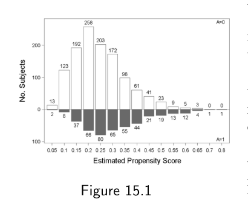
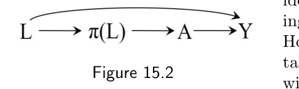

第二部分 · 基于模型的因果推断 · Part II — Causal inference with models
第 15 章 · 结局回归与倾向性评分
Hernán MA, Robins JM（2020）. Causal Inference: What If. Chapter 15. 本页为中文全文翻译，附译注。
结局回归和倾向性评分的各种版本，是因果推断中最常用的参数化方法。你完全有理由奇怪：我们为什么这么晚才安排一章来讲这些方法。到目前为止，我们讲的是逆概率加权、标准化和 g 估计——也就是那几个 g 方法。把最常用的方法放在最不常用的方法之后讲，看起来是个古怪的编排。我们为什么不从更简单、也更常用的结局回归和倾向性评分方法开始？因为这些方法在一般情况下不管用。更准确地说，这些更简单的结局回归与倾向性评分方法——它们在数也数不清的文献里被反复描述，本章无论如何也总结不完——在较简单的场景里工作得很好，但它们并不是为“时变处理的因果推断”所带来的复杂性而设计的。到第三部分我们会再次讨论 g 方法，但那时关于传统结局回归和倾向性评分方法会讲得少一些。本章专门讲那些虽然常用、但在复杂纵向数据上适用面很窄的因果方法。
15.1 结局回归
过去三章里，我们用逆概率加权、标准化和 g 估计来估计戒烟（处理）A 对体重增加（结局）Y 的平均因果效应。我们也讲了如何估计人群某个子集内的平均因果效应：可以把分析限制在你关心的那个子集上，也可以在边际结构模型（第 12 章）和结构嵌套模型（第 14 章）里加入乘积项。以结构嵌套模型为例。这类模型包含处理 A 与变量 L 之间乘积项的参数，却不含变量 L 自身的参数。这是结构嵌套模型一个讨人喜欢的性质：我们感兴趣的是 L 各水平内 A 对 Y 的因果效应，而不是 L 与 Y 之间那个（非因果的）关系。一个对 L–Y 关系的函数形式不置评的方法——即结构嵌套模型的 g 估计——就不会因为这个关系被误设而产生偏倚。
另一方面，如果我们愿意去设定 A 各水平内 L 与 Y 的关联，就会考虑这样的结构模型
E[Ya,c=0 | L] = β0 + β1 a + β2 aL + β3 L
其中 β2 和 β3 是向量参数。L 每一层中戒烟 A 对体重增加 Y 的平均因果效应，是 β1 和 β2 的函数；L 每一层中未处理下的平均反事实结局，则是 β0 和 β3 的函数。参数 β3 通常被称作 L 的主效应，但“效应”这个词用在这里是有误导的，因为 β3 未必能解释为 L 的因果效应（L 本身可能存在混杂）。从我们的结构模型可以看出，β3 只是量化了反事实 Ya=0,c=0 的均值如何随 L 变化。至于像 β0、β3 这样不具因果解释的参数，见精细辨析 15.1 的讨论。
在可交换性、可阳性性和干预定义明确这三个条件下，若 L 的第 l 层里所有人都接受了处理且始终未被删失，他们的平均反事实结局 E[Ya=1,c=0 | L = l] 就等于未删失的接受处理者中相应的平均结局 E[Y | A = 1, C = 0, L = l]；未接受处理的情形同理。于是，上面那个结构模型的参数可以通过普通最小二乘来估计——只要拟合 13.2 节所述的结局回归模型
E[Y | A, C = 0, L] = α0 + α1 A + α2 AL + α3 L
即可。和第 3 章的分层一样，结局回归是通过估计 L 各层内的处理因果效应来调整混杂的。若变量 L 足以调整混杂（以及选择偏倚），且结局模型设定正确，就不必再做别的调整。也就是说，回归模型的参数 α 与结构模型的参数 β 描述的是同一个依赖关系，即 Ya=0,c=0 对 L 的依赖；当这个模型被用来估计 (i) 平均反事实结局，以及 (ii) L 各层内的乘法（而非加法）条件效应时，这一依赖关系是必需的。
13.2 节里，结局回归是走向标准化结局均值的一个中间步骤。这里，结局回归本身就是整个流程的终点。我们不再把条件均值的估计标准化成一个边际均值，而是直接比较各条件均值的估计。13.2 节中，我们拟合的回归模型在 β2 里只含一个乘积项（A 与吸烟强度之间的），也就是说，这是一个我们事先把大多数乘积项都设为零的模型。用与 13.2 节相同的模型，这里得到的参数估计为 β̂1 = 2.6 和 β̂2 = 0.05。
举个例子，效应估计 E[Ŷ | A = 1, C = 0, L] − E[Ŷ | A = 0, C = 0, L] 对每天吸 5 支烟的人来说是 2.8（95% 置信区间：1.5, 4.1），对每天吸 40 支烟的人是 4.4（95% 置信区间：2.8, 6.1）。结局回归的一种常见做法，是假定 L 中没有任何变量造成效应修饰。这样拟合模型时就不放任何乘积项，而 β̂1 同时是条件平均因果效应和边际平均因果效应的估计。在我们的例子里，不含乘积项的模型给出的估计是 3.5（95% 置信区间：2.6, 4.3）kg（原书为这一小节配了示例程序 Program 15.1）。
这一章里我们不必再解释怎么拟合结局回归模型，因为第 13 章估计参数化 g 算法的各个组成部分时已经做过一次。用结局回归处理离散结局同样直截了当。比如对二值结局 Y，可以拟合一个 logistic 模型来估计 Pr[Y = 1 | A = a, C = 0, L]。
15.2 倾向性评分
在使用逆概率加权（第 12 章）和 g 估计（第 14 章）时，我们都为每个个体估计了给定协变量 L 下接受处理的概率 Pr[A = 1|L]。我们把这个条件概率记作 π(L)。对接受处理概率很低的个体，π(L) 的值接近 0；对接受处理概率很高的个体，接近 1。也就是说，π(L) 度量的是：在协变量 L 所提供的信息下，个体接受处理的倾向有多大。π(L) 之所以被叫作倾向性评分（propensity score），就是这么来的。
在一项理想的随机化试验里，若一半个体被分到处理 A = 1，那么所有人的倾向性评分都是 π(L) = 0.5。还要注意，无论 L 取什么值，π(L) 都是 0.5。相比之下，在观察性研究里，有些个体比另一些更可能接受处理。由于处理的分派不在研究者的掌控之内，真正的倾向性评分 π(L) 是未知的，因此必须从数据里估计。
在我们的例子里，我们可以通过拟合一个 logistic 模型来估计倾向性评分 π(L)——建模戒烟 A 在给定协变量 L 下的概率。这与我们做逆概率加权和 g 估计时用的是同一个模型。在该模型下，个体 22941 的估计倾向性评分最低（0.053），个体 24949 最高（0.793）。图 15.1 展示了估计倾向性评分在戒烟者 A = 1（下方）与未戒烟者 A = 0（上方）中的分布。不出所料，戒烟者戒烟的估计概率平均而言更高（0.312），高于未戒烟者（0.245）。如果 π(L) 在接受处理者 A = 1 与未接受处理者 A = 0 中的分布相同，那么就不存在由 L 造成的混杂，也就是说，在因果图上从 L 到 A 没有开放路径。

A = 0，下半（灰色柱）为戒烟者 A = 1；横轴是估计倾向性评分的取值区间，柱顶数字为落入该区间的人数。两组分布大幅重叠，但戒烟者的评分整体略高。倾向性评分相同的个体，某些协变量 L 的取值通常并不相同。比如两个 π(L) = 0.2 的个体，可能在吸烟强度和运动量上很不一样，但在给定 L 中所有变量之后，两人戒烟的可能性相同。也就是说，两人的条件概率——最终落入处理组 A = 1 的概率——是一样的。如果我们把超总体（super-population）里所有 π(L) 取某个给定值的人放在一起看，这一组里会有 L 取值各不相同的人（例如吸烟强度和运动量各不相同），但 L 的分布在接受处理者与未接受处理者中是相同的，也就是 A ⊥⊥ L | π(L)。我们说，倾向性评分在处理组与未处理组之间平衡了协变量。
当然，倾向性评分只平衡了已测协变量 L，这并不能阻止未测因素带来的残余混杂。随机化同时平衡了已测和未测的协变量，因此才是消除混杂的首选手段。平衡评分（balancing score）的正式定义见技术要点 15.1。

L) 是位于 L 与 A 之间的中间节点，L 到 π(L) 的箭头是确定性的。和我们讨论过的所有因果推断方法一样，使用倾向性评分方法需要可交换性、可阳性性和一致性这三个识别条件。倾向性评分方法之所以站得住脚，靠的是下面这个关键结果：接受处理者与未接受处理者在协变量 L 各水平内的可交换性，蕴含它们在倾向性评分 π(L) 各水平内的可交换性。也就是说，条件可交换性 Ya ⊥⊥ A | L 蕴含 Ya ⊥⊥ A | π(L)。此外，倾向性评分 π(L) 各水平内的可阳性性——即没有任何个体的倾向性评分恰好等于 1 或 0——当且仅当第 2 章定义的协变量 L 各水平内的可阳性性成立时成立。
在倾向性评分 π(L) 各水平内的可交换性与可阳性性之下，可以用倾向性评分通过分层（包括结局回归）、标准化和匹配来估计因果效应。接下来两节讲这些方法各自怎么实施。第一步总是要先从观察数据里估出倾向性评分 π(L)，然后用估计出的倾向性评分替代协变量 L，去做分层、标准化或匹配。
15.3 倾向性评分分层与标准化
在倾向性评分 π(L) 取某个特定值 s 的个体中，平均因果效应 E[Ya=1,c=0 | π(L) = s] − E[Ya=0,c=0 | π(L) = s] 在识别条件下等于 E[Y | A = 1, C = 0, π(L) = s] − E[Y | A = 0, C = 0, π(L) = s]。这个条件效应可以通过把分析限制在真正倾向性评分取值为 s 的个体上来估计。然而倾向性评分 π(L) 一般是个连续变量，可以取 0 与 1 之间的任何值，因此两个个体恰好有相同的 s 值的可能性不大。举个例子，只有个体 22005 的估计 π(L) 等于 0.6563——这意味着我们无法通过比较那些恰好取该值的处理组与未处理组成员，去估计 π(L) = 0.6563 人群中的因果效应。
处理连续倾向性评分的一种办法，是构造若干层，让每层包含 π(L) 取值相近但不完全相同的个体。按估计 π(L) 的十分位（decile）分层是个常见选择：把人群分成 10 个大小大致相等的层，然后在每层内估计因果效应。在我们的例子里，每个十分位约含 162 人。戒烟对体重增加的效应在各十分位间从 0.0 到 6.6 kg 不等，但这些点估计周围的 95% 置信区间相当宽（原书示例程序见 Program 15.3）。
我们本也可以通过拟合 E[Y | A, C = 0, π(L)] 的结局回归模型来得到这些效应估计：把处理 A、估计 π(L) 的 9 个十分位指示变量（其中一个十分位作为参照层，已被吸收进模型的截距），以及 A 与这 9 个指示变量之间的 9 个乘积项一并作为协变量。多数用估计 π(L) 十分位做结局回归的应用并不包含这些乘积项，也就是假定 π(L) 不存在效应修饰。在我们的例子里，不含乘积项的模型给出的效应估计是 3.5 kg（95% 置信区间：2.6, 4.4）。关于倾向性评分造成的效应修饰，更多内容见精细辨析 15.2。
按十分位或倾向性评分的其他函数来分层，会带来一个潜在问题：一般来说，连续的 π(L) 在某些层（比如十分位）内部的处理组与未处理组之间分布并不相同。假如在某些层里处理组的平均 π(L) 比未处理组更高，那么这些层里的处理者与未处理者就可能不可交换。这个问题在前几章里没有出现：那时我们是用倾向性评分的函数（数值本身）通过逆概率加权和 g 估计去估计结构模型的参数，而这些方法用的是估计概率的具体数值，而不是十分位那样的类别变换。同理，把估计倾向性评分 π(L) 当作连续协变量（而不是一组指示变量）来为 E[Y | A, C = 0, π(L)] 做结局回归时，也不会出这个问题。在我们的例子里采用后一种做法时，效应估计是 3.6（95% 置信区间：2.7, 4.5）kg。
我们推断的有效性，取决于 π(L) 与结局均值 Y 之间关系的正确设定（我们假定它是线性的）。不过，由于倾向性评分是多维 L 的一维概括，用三次样条（cubic splines）之类的灵活模型、而不是给倾向性评分放一个简单的线性项，来拟合 π(L) 与均值结局的关系，是很容易就能防住这一关系被误设的。还要注意，逆概率加权和 g 估计对倾向性评分与结局之间的关系是不置评的。
当我们对 E[Y | A, C = 0, π(L)] 的参数化假定正确、且可交换性与可阳性性成立时，该模型估计的是倾向性评分所有水平 s 内的平均因果效应 E[Ya=1,c=0 | π(L) = s] − E[Ya=0,c=0 | π(L) = s]。如果我们感兴趣的是整个研究人群中的平均因果效应 E[Ya=1,c=0] − E[Ya=0,c=0]，那就要用倾向性评分的分布去标准化条件均值 E[Y | A, C = 0, π(L)]。这与第 13 章针对连续变量描述的流程完全一样，只是把变量 L 换成估计的 π(L)。注意，这个流程可以很自然地在结局模型里纳入处理 A 与估计 π(L) 之间的乘积项。在我们的例子里，标准化后的效应估计是 3.6（95% 置信区间：2.7, 4.6）kg（原书示例程序见 Program 15.4）。
15.4 倾向性评分匹配
按倾向性评分 π(L) 做匹配，与按单个连续变量 L 做匹配是类似的，后一过程在第 4 章描述过。倾向性匹配有很多种形式。它们都试图造出一个匹配人群（matched population），使其中处理者与未处理者因拥有相同的 π(L) 分布而可交换。比如，可以把未处理者匹配到处理者：每个接受处理者配上一个（或多个）倾向性评分相同的未接受处理者。由这些“处理-未处理”配对（或配对组）构成的原始人群子集，就是匹配人群。在给定 π(L) 的可交换性与可阳性性之下，匹配人群中的关联度量是效应度量的一致估计：匹配人群中的关联风险比一致地估计出匹配人群中的因果风险比。
同样，两个个体恰好有相同倾向性评分 π(L) 的可能性不大。在我们的例子里，倾向性评分匹配的做法是为每个接受处理者找一个（或多个）π(L) 值与之接近的未接受处理者。一种常见做法是把估计 π(L) 取值为 s 的接受处理者，与取值 s ± 0.05（或某个其他小差值）的未接受处理者配对。举例来说，接受处理的个体 1089（估计 π(L) 为 0.6563）可以与未接受处理的个体 1088（估计 π(L) 为 0.6579）配成一对。“接近”该怎么定义有很多种，具体描述这些定义超出了本书的范围。
在倾向性匹配中定义“接近”，意味着要在偏倚与方差之间取舍。如果接近的标准太松，π(L) 取值相差相对较大的个体会被配到一起，匹配人群中 π(L) 的分布在处理组与未处理组之间就会不同，可交换性也不成立。反过来，如果接近的标准太紧，许多个体被匹配程序排除在外，那么我们得到的只是近似的可交换性，效应估计的 95% 置信区间可能更宽。
“接近”的定义与可阳性性的定义也有关联。在我们的戒烟例子里，处理者与未接受处理者的估计 π(L) 分布，在绝大部分取值范围内都是重叠的（见图 15.1）。只有 2 名接受处理的个体（占研究人群的 0.01%）的取值高于任何一名未接受处理者。上一节用估计 π(L) 做结局回归时，我们实际上是假定“高 π(L) 处缺少未接受处理者”是偶然造成的——随机的不阳性——因此把全部个体都纳入了分析。相比之下，多数倾向性匹配分析会认为这 2 名接受处理者与任何一个未接受处理者都不够“接近”，从而把他们排除。匹配并不区分随机的不阳性与结构性的不阳性。
以上讨论说明，匹配人群可能与目标（超）人群大不相同。理论上，倾向性匹配可以用来估计一个特征明确的目标人群中的因果效应。比如，当每个接受处理者与一个或多个未接受处理者配对、而把配不上对的未接受处理者排除时，你估计的是接受处理者中的效应（见精细辨析 15.2）。但在实践中，倾向性匹配给出的效应估计可能对应研究人群里一个难以描述的子集。举例来说，在某种给定的“接近”定义下，某些接受处理者无法与任何未接受处理者配对，于是被排除出分析。结果是，效应估计所对应的那个人群子集，是由“那些估计倾向性评分上成功配上了对”的取值所定义的。
设想我们看了图 15.1 之后得出结论：只能对估计倾向性评分小于 0.67 的人估计戒烟的效应。这些人是谁？说不清，因为人不会把倾向性评分纹在额头上。由于匹配人群没有被很好地刻画，就很难评估效应估计对其他人群的可推广性（transportability）。
当可阳性性成为问题时，基于真实世界变量（例如年龄、每日吸烟支数）来做限制，能对因果效应给出更自然的刻画。在我们的戒烟例子里，估计 π(L) > 0.67 的那两名接受处理者，是研究里唯一既年过 50 岁、吸烟又不足 10 年的人。我们可以把他们排除，并说明效应估计只适用于 50 岁以下的吸烟者，以及 50 岁及以上但吸烟至少 10 年的吸烟者。这样定义目标人群，比把它定义成“估计 π(L) < 0.67 的人”要自然得多。
用倾向性评分去探测处理者与未接受处理者的重叠范围或许有用，但仅仅把研究人群限制到那个范围，是保证可阳性性的一种偷懒做法。倾向性匹配所自动带来的可阳性性，需要与另一项困难权衡：只按估计倾向性评分的取值来限制人群，会让可推广性难以评估。
15.5 倾向性模型、结构模型与预测模型
在本书第二部分，我们描述了两类不同的因果推断模型：倾向性模型和结构模型。现在把两者摆在一起比较。
倾向性模型是关于处理 A 在变量 L 条件下概率的模型，用来设法达到条件可交换性。本章的匹配与分层、第 12 章的逆概率加权、第 14 章的 g 估计，用的都是倾向性模型。倾向性模型的参数是冗余参数（见精细辨析 15.1），不具因果解释，因为变量 L 与处理 A 之间的关联可能有很多成因——不只是因为 L 导致了 A。比如在图 7.1 下，L 与 A 之间的关联可以解释为 L 对 A 的效应，但在图 7.2 和图 7.3 下就不行。然而倾向性模型对因果推断仍然有用：正如本章及前面几章所描述的，它常常是估计结构模型参数的基础。
结构模型描述处理 A 与反事实结局 Ya 分布某个成分（例如均值）之间的关系，可以是边际的，也可以是在变量 L 各水平内的。处理连续时，结构模型常被称为剂量-反应模型。结构模型中与处理有关的参数不是冗余参数：它们有直接的因果解释，即不同处理取值 a 下的结局之差。我们描述过两类结构模型：边际结构模型与结构嵌套模型。边际结构模型包含处理的参数、可能是效应修饰变量的 V 的参数，以及处理与 V 之间乘积项的参数。V 的选择只反映研究者对效应修饰的实质兴趣（见 12.5 节）。若不纳入任何协变量 V，模型就是真正边际的。若把所有变量 L 都作为可能的效应修饰变量纳入，边际结构模型就变成了伪边际结构模型。结构嵌套模型包含处理的参数，以及处理 A 与 L 中所有作为效应修饰变量的变量之间的乘积项参数。我们曾把结局回归作为估计伪边际结构模型参数的一种因果推断方法来呈现。然而，结局回归同样被广泛用于纯预测（而非因果）的目的。
举个预测的例子：线上零售商用复杂的结局回归模型预测哪些顾客更可能购买他们的产品。目标不是判定你的年龄、性别、收入、地理来源和过往购买对当前这次购买有没有因果效应，而是找出那些更可能下单的顾客，好把特定的营销活动精准投放给他们。整件事讲的是关联，不是因果。同样，医生也用基于结局回归的算法来识别那些罹患重病或死亡风险很高的患者。这些预测模型的参数未必有任何因果解释，而且模型中所有协变量的地位是相同的——也就是说，模型里压根没有处理变量 A 与变量 L 之分。
结局回归在因果推断与预测这两处被同时使用，造成了许多误解。其中最重要的一种与变量选择程序有关。当研究兴趣只在结局预测上时，研究者可能想挑出任何能改善模型预测能力的变量，把它们作为协变量纳入。很多知名的变量选择程序——比如前向选择、后向剔除、逐步法——以及机器学习领域近年的新进展，都是为增强预测而生的。对那些志在预测的研究者来说，它们是得力的工具，在处理极高维数据时尤其如此。
可惜，统计学的课程和教科书并不总是把因果推断与预测分得足够清楚。结果是，这些面向预测模型的变量选择程序，也就被搬到了因果推断模型上。这种错配可能造成的后果之一，是在倾向性模型和结构模型里塞进多余的——甚至有害的——协变量。具体来说，把预测算法用在因果推断模型上，可能导致方差膨胀。
问题出在一个广泛流传却站不住脚的想法：人们普遍以为倾向性模型应该把处理 A 预测得越好越好。倾向性模型并不需要把处理预测得很准。它只需要纳入那些能保证可交换性的变量 L。那些与处理强相关、但对保证可交换性并非必需的协变量，并无助于减少偏倚。若把它们放进 L，调整反而可能给出方差极大的估计。
看一个例子。假设某项研究里的所有人，要么去 Aceso 医院，要么去 Panacea 医院。Aceso 医院的医生给 99% 的人开处理 A = 1，Panacea 医院的医生则给 99% 的人 A = 0。再假设变量“医院”对结局没有任何影响（除了通过它对处理 A 的影响），因而它并非达到条件可交换性所必需。现在我们偏要把“医院”加进倾向性模型当协变量。在目标人群里，Aceso 医院的人倾向性评分 π(L) 约为 0.99，Panacea 医院的人约为 0.01；但纯属偶然，我们可能会得到这样一个人群：在 L 定义的某些层里，Aceso 医院的人全都是 A = 1，或者 Panacea 医院的人全都是 A = 0。也就是说，我们的效应估计可能方差近乎无穷，而混杂却一点没减少。处理现在被预测得极好这件事，对因果推断毫无意义。
除了方差膨胀，用预测的思路去为因果推断模型——无论是倾向性模型还是结局回归模型——挑变量，还可能招来自找的偏倚。举个例子：把碰撞因子（collider）纳入协变量，即便它们作为纯预测的协变量很有效，也会带来系统性偏倚。这些问题我们会在第 18 章再谈。
所有基于模型的因果推断方法——倾向性模型和结构模型——都不要求协变量的函数形式设定无误。为了降低模型误设的可能，我们用三次样条这类灵活的设定，而不是线性项。此外，这些因果推断方法还要求可交换性、可阳性性以及明确的干预定义，才能得到无偏的因果推断。下一章我们将描述一类非常不同的因果推断方法，它并不要求我们熟知的这种可交换性。